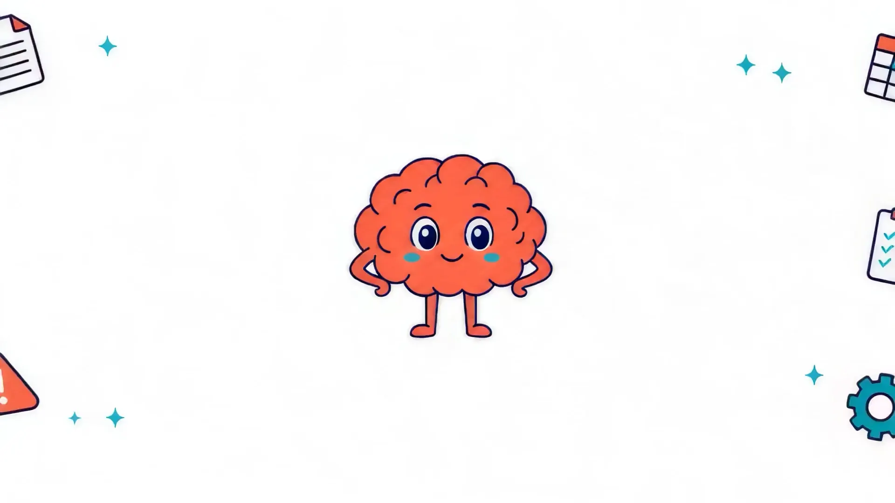
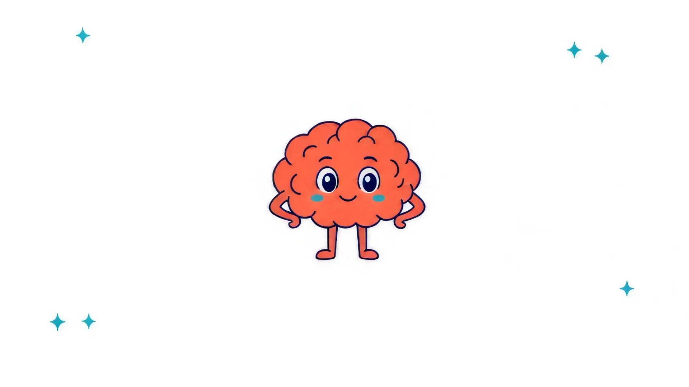
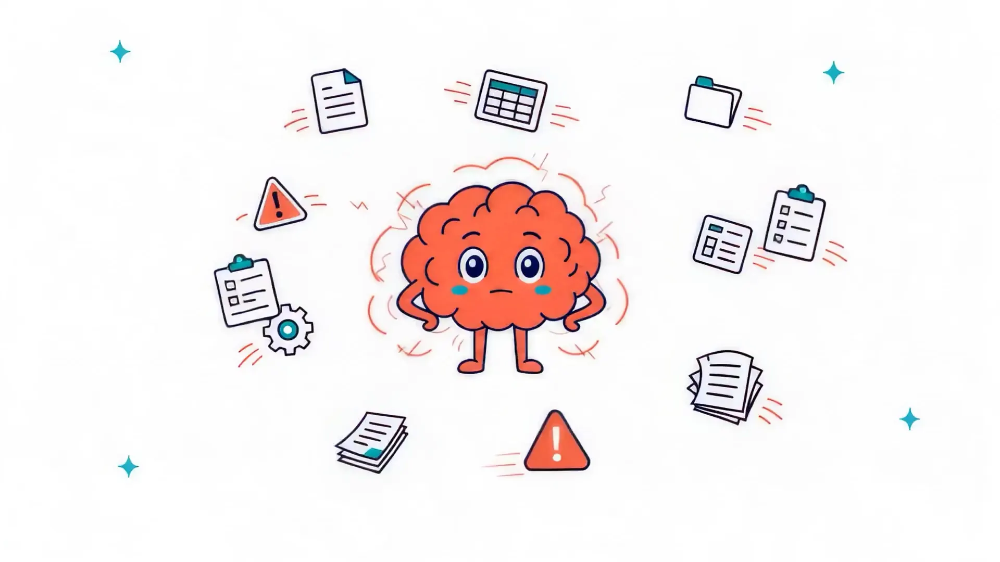
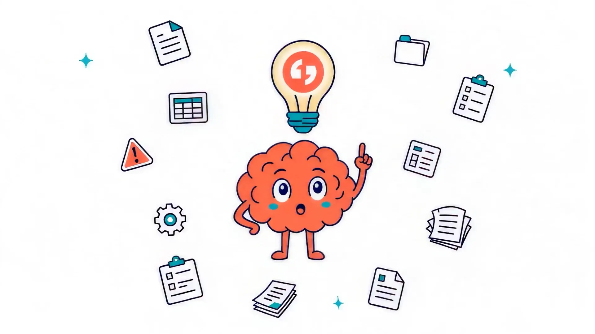
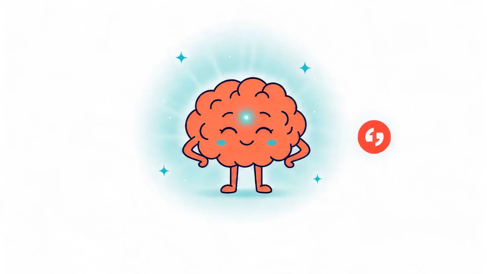

Seveso-III · BRZO 2015 · Omgevingswet
Alles zit in je hoofd.
Je site draait dag en nacht. En elke dag groeit de bewijslast die je moet kunnen tonen.

Seveso-III · BRZO 2015 · Omgevingswet
Je site draait dag en nacht. En elke dag groeit de bewijslast die je moet kunnen tonen.
Je denkt dat je installatie veilig is. Maar kun je dat bewijzen?
Het probleem was nooit alleen je veiligheid. Het is vooral je versnipperde bewijs.
PBZO hier, veiligheidsrapport daar, actielijsten in tien mailboxen. Tot de inspecteur op de stoep staat.
Eén VBS. Zeven elementen. Eén hoofd dat alles draagt.
Tot het kwartje valt: dit hoort geen geheugenwerk te zijn. Dit hoort infrastructuur te zijn.
Seveso Control™
Eén commandocentrum voor je volledige VBS.
Continu op orde. Inspectie-bestendig. Juridisch verdedigbaar.

Je site draait dag en nacht. En elke dag groeit de bewijslast die je moet kunnen tonen.
Het probleem was nooit alleen je veiligheid. Het is vooral je versnipperde bewijs.
PBZO hier, veiligheidsrapport daar, actielijsten in tien mailboxen. Tot de inspecteur op de stoep staat.


Eén VBS. Zeven elementen. Eén hoofd dat alles draagt.
Tot het kwartje valt: dit hoort geen geheugenwerk te zijn. Dit hoort infrastructuur te zijn.
Eén commandocentrum voor je volledige VBS.
Continu op orde. Inspectie-bestendig. Juridisch verdedigbaar.

De film eindigt waar je dag begint: elk element van je veiligheidsbeheerssysteem continu bewaakt. Rood wordt oranje, oranje wordt groen — en blijft groen.
Van organisatie tot audit: „op orde" betekent voor elk element iets anders. Seveso Control™ bewaakt ze alle zeven, in samenhang.
Rollen, verantwoordelijkheden en training: vastgelegd en aantoonbaar actueel.
Risico's van zware ongevallen in kaart, met een onderbouwing die meegroeit met de installatie.
Procedures voor veilig bedrijven en onderhoud, gevolgd op de vloer — niet alleen op papier.
Elke wijziging aan installatie of proces getoetst en vastgelegd vóór ze wordt doorgevoerd.
Bedrijfsnoodplan operationeel bruikbaar op de vloer, niet alleen juridisch dekkend.
Continue evaluatie van naleving, met opvolging van incidenten en bijna-ongevallen.
Periodieke controle van het VBS en analyse van bevindingen, met opvolging tot sluiting.
Compliance drift ontstaat wanneer regelgeving verandert, documenten uit sync raken en de werkvloer-realiteit langzaam wegdrijft van het officiële beheerssysteem.
Clara bewaakt continu de verbinding tussen wet- en regelgeving, VBS-documentatie, acties en de werkelijkheid op de werkvloer. Verandert regelgeving, raken documenten uit sync of blijven acties liggen, dan maakt Clara de afwijking zichtbaar vóórdat die tijdens een inspectie naar boven komt.
Zo blijft duidelijk wat actueel is, wie waarvoor verantwoordelijk is en welk bewijs beschikbaar is. Het VBS verandert van een statisch documentensysteem in een levend managementsysteem dat meebeweegt met de praktijk.
Het resultaat: minder handwerk, minder verrassingen en meer aantoonbare grip op Seveso-compliance.
Rapporten die verouderen op de dag van oplevering. Elke inspectie begint weer bij nul.
Eén systeem dat het VBS continu draagt: AI-augmented platform, de Seveso Expert Hotline met juristen en senior veiligheidskundigen, en done-for-you trajecten op locatie.
landen, lokaal gemaakt
VBS-elementen, één commandocentrum
diensten, één partner
sites op hetzelfde platform, van 1 tot 20+
NL BRZO · FR ICPE · DE Störfall-Verordnung · ES APQ · BE Seveso
Van eerste scan tot volledig platform: elk traject sluit aan op de rest. Bekijk het volledige aanbod van zeven diensten →
Een systeem dat altijd inspectie-klaar is. Ook als je er niet bent.
DocumentscanBundelscan van vijf VBS-documenten. Eén helder beeld van waar je staat.
Op locatieWij lopen je inspectie vóór de inspecteur dat doet. Geen verrassingen.
Geen sales, geen druk. Eén gesprek over waar je VBS vandaag staat.